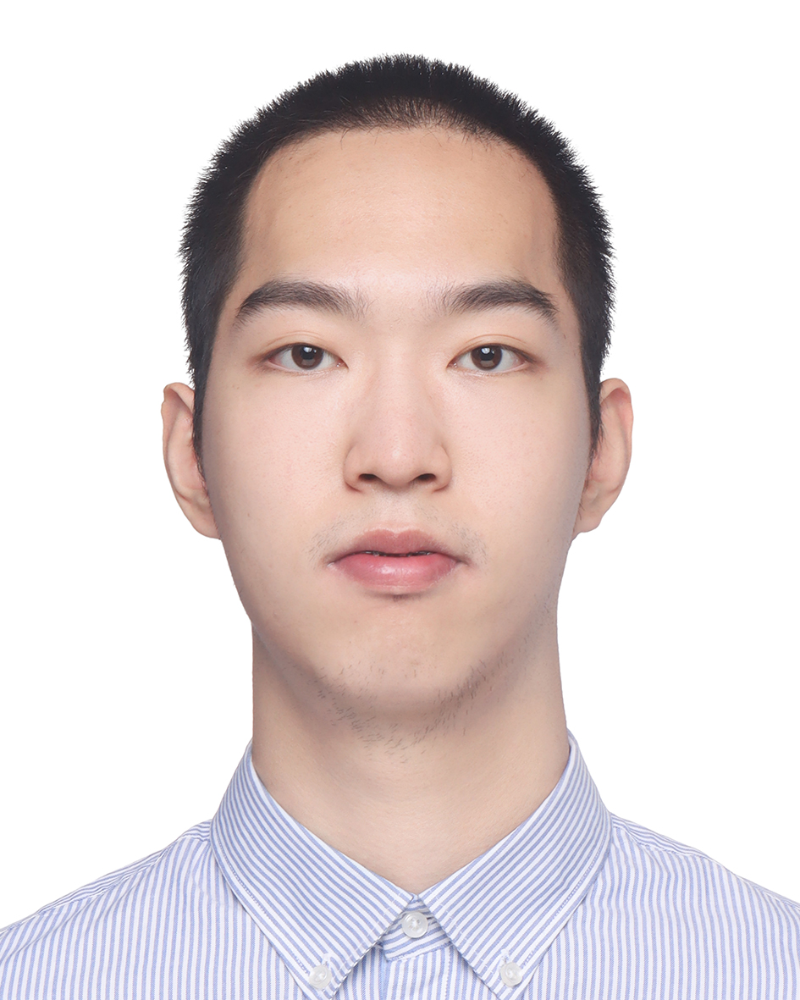
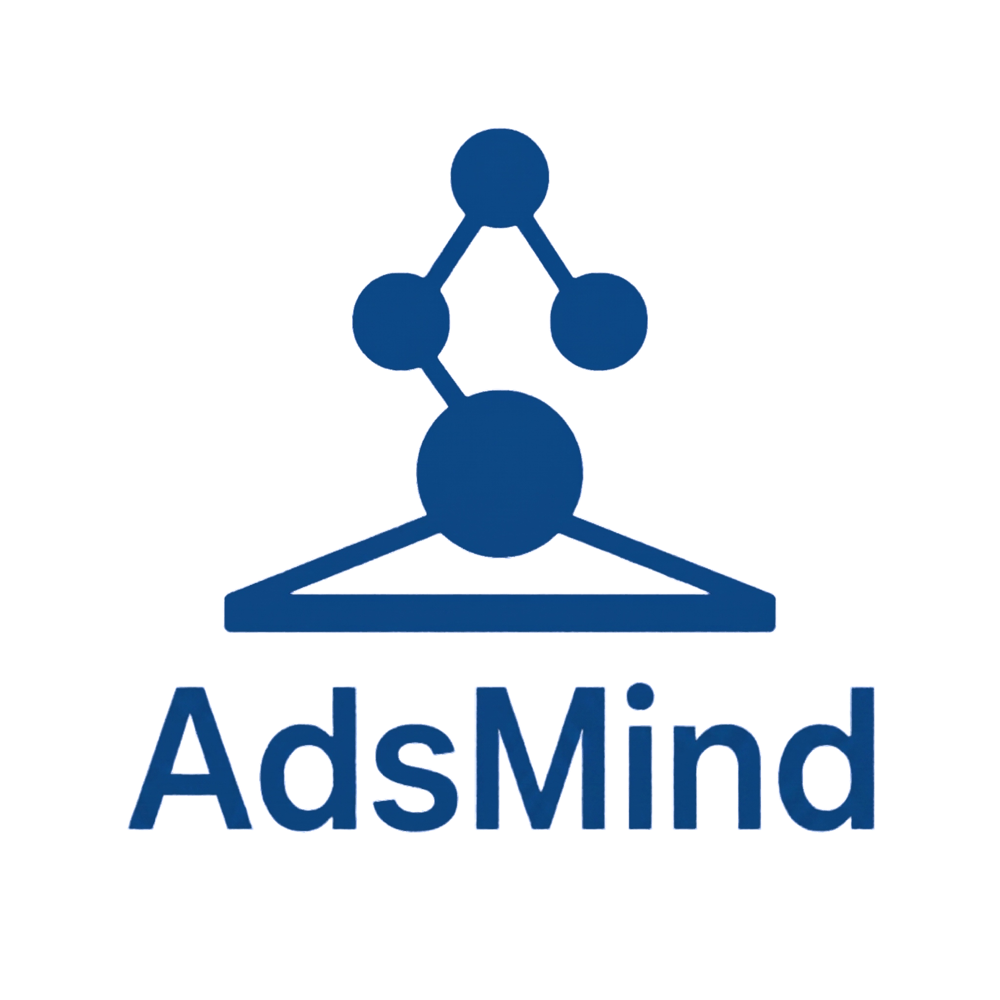
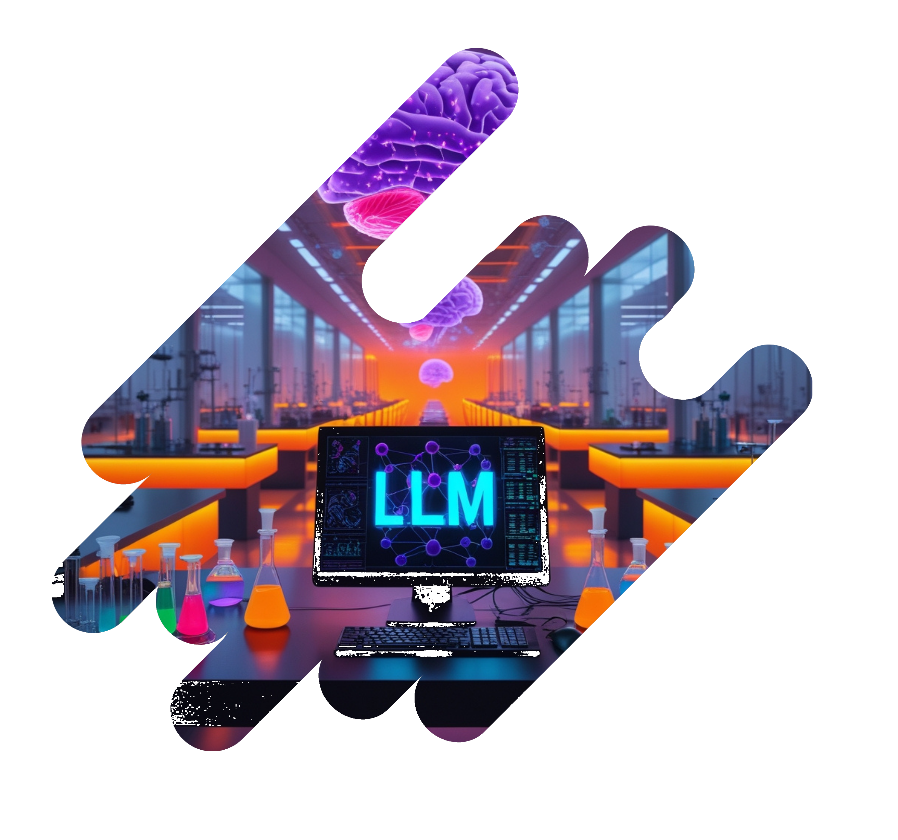
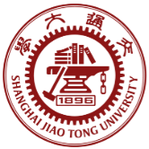

Zongmin Zhang (Nagato)
HKUST Computer Science Undergraduate
AI for Science Researcher
I am a senior undergraduate student majoring in Computer Science with a minor in Chemistry at The Hong Kong University of Science and Technology (HKUST). My research focuses on AI for Science (AI4Sci), AI for Chemistry (AI4Chem), autonomous scientific discovery (AutoResearch), multi-agent systems (MAS), and large language models (LLM).
- AI for Science
- AI for Chemistry
- Autonomous Scientific Discovery
- Multi-Agent Systems
- Large Language Models

Selected Publications & Preprints

AdsMind: A Physics-Grounded Multi-Agent System for Self-Correcting Discovery of Adsorption Configurations on Heterogeneous Catalyst Surfaces
Highlight:
Led the implementation, benchmark design and cross-backend evaluation of AdsMind, a closed-loop, physics-grounded multi-agent system for autonomous adsorption-configuration discovery on heterogeneous catalyst surfaces.
arXiv preprint arXiv:2606.19152, 2026. Journal manuscript under review.
Adsorption
Multi-Agent Systems
Heterogeneous Catalysis
CatDT
Autonomous Heterogeneous Catalyst Discovery with a Self-Evolving Multi-Agent Digital Twin
Highlight:
Conducted Codex-based ablation experiments and contributed to the evaluation of CatDT, a self-evolving multi-agent digital-twin framework for autonomous heterogeneous catalyst discovery.
arXiv preprint arXiv:2606.05050, 2026. Journal manuscript under review.
Heterogeneous Catalysis
Digital Twin
Multi-Agent Systems

From Knowledge to Action: Outcomes of the 2025 Large Language Model (LLM) Hackathon for Applications in Materials Science and Chemistry
Highlight:
Large-author community report on LLM-enabled scientific workflows from an international hackathon at the intersection of large language models, materials science, and chemistry.
arXiv preprint arXiv:2605.03205, 2026.
Large Language Models
AI Agent
Materials Science
Chemistry
Selected Projects
AdsMind
A closed-loop, physics-grounded multi-agent system for autonomous adsorption-configuration discovery on heterogeneous catalyst surfaces.
Education & Research Experience
Education
Sep 2023 - Present
The Hong Kong University of Science and Technology (HKUST), Bachelor of Engineering (BEng) in Computer Science, minor in Chemistry.
Sep 2025 - Feb 2026
HKUST SENG Undergraduate Outbound Exchange Student, École polytechnique fédérale de Lausanne (EPFL), School of Computer and Communication Sciences, Lausanne, Switzerland.

Feb 2025 - Jun 2025
Association of Pacific Rim Universities (APRU) Virtual Student Exchange (VSE), hosted online by Shanghai Jiao Tong University (SJTU), School of Materials Science and Engineering.
Research
Feb 2026 - Present
Undergraduate Research Assistant (UGRA), AI for Physical Sciences (AI4PhysSci) Lab, HKUST. Supervisor: Prof. Sherry Lixue Cheng.
Sep 2025 - Jan 2026
Project student, Laboratory of Artificial Chemical Intelligence (LIAC), EPFL. Supervisors: Prof. Philippe Schwaller and Dr. Edvin Fako.
Jun 2024 - May 2026
HKUST UROP projects in database knowledge discovery, VR user experience assessment, and orbital-based learning for property prediction.
Selected Honors
Scholarships
HKSAR Government Scholarship - Continuing Awards, 2025/26
HKSAR Government Scholarship - Continuing Awards, 2024/25
Hong Kong, China-APEC Scholarship, 2025/26
Hong Kong, China-APEC Scholarship, 2024/25
HKSAR Government Scholarship - Reaching Out Award (ROA), 2025/26
HKUST Study Abroad Grant
Honors
HKUST SENG Dean's List, Spring 2025
HKUST SENG Dean's List, Fall 2024
HKUST SENG Dean's List, Spring 2024
HKUST SENG Dean's List, Fall 2023
Awards
Finalist Award, HKUST GenAI Hackathon Competition on a Putonghua Web Tool, 2026
First Prize, National University Students' Data Analysis Popular Science Knowledge Competition (Theory Track), 2026
Extracurricular Activities & Skills
Service & Leadership
Reviewer and community roles.
- Reviewer, ICML 2026 AI for Science Workshop.
- Founding Organizer, HKUST AI for Chemistry Club, a student-led academic community supported by the Department of Chemistry.
- Student Representative, HKUST SENG Mainland Undergraduate Recruitment Trip for JEE Main Round Interview Mingling Sessions.
Teaching
Undergraduate teaching and peer-support roles.
- UGTA, HKUST COMP2011 Programming with C++, Spring 2025.
- UGTA, HKUST CSE Programming Commons, Fall 2024 and Spring 2026.
Technical Stack
Selected tools and methods.
- C/C++, Java, Python, Scala, C#, JavaScript, Rust.
- PyTorch, TensorRT, NumPy, OpenCV, VTK, YOLO, SAM.
- LangChain, LangGraph, ReAct, RAG, MCP, skills.
- Codex, Claude Code, OpenClaw, Hermès Agent.
- RDKit, ASE.
- Linux, bash, zsh.
Languages
Working languages and study interests.
- Mandarin: native.
- English: professional working proficiency.
- Japanese: approximately JLPT N3 level.
- French: approximately CEFR A1 level.
- Cantonese: basic.